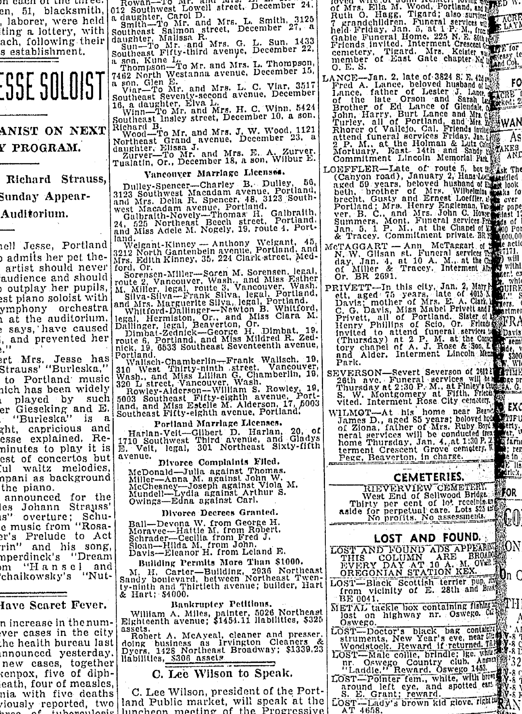

William S. Rowley b. 1914
Husband of Peter's grandmother Estella May Alderson.
William S. Rowley was born between 1914 and 1916 in Oregon, United States1. He married Estella May Alderson on 30 Dec 1933 in Vancouver, Clark County, Washington, United States2.
Family
- Wife
- Estella May Alderson 1916–2008 · married on 30 Dec 1933 in Vancouver, Clark County, Washington, United States
Life events
| Event | Date | Place and details |
|---|---|---|
| Born | bet 1914 and 1916 | Oregon, United States Preferred version: Automatic: the best-supported value (primary records count most; the 2015 tree least). Not yet reviewed; add a preference in data/curation/structure.yaml.1 |
| Born | bet 1914 and 1915 | 2 |
| Lived | 4 Jan 1934 | Portland, Multnomah County, Oregon, United States3 |
| Lived | 1935 | Portland, Multnomah County, Oregon, United States4 |
| Lived | Apr 1940 | Concord, Oregon, United States5 |
Records

Sources
- Household of Sherwin William Rowley, Concord Election Precinct, Clackamas, Oregon.
Sherwin William Rowley: Census 1940 @ Concord Election Precinct, Clackamas, Oregon, United States; Residence 1935 @ Portland, Multnomah, Oregon; Birth 1916 @ Oregon; RelationshipToHead=Head; Age=24
The 1940 US census records Sherwin William Rowley as age 24, born in Oregon (c. 1916), while his 30 December 1933 Clark County marriage return gives his age as 19 (born c. 1914).
- S-fs-QPMN-ZW9T.
To William S. Rowley (19). Bride 17. Bride's parents: Winter S. Alderson and May E./May C. Newman. Groom's parents: William S. Rowley and Lillie Manney.
- Vancouver Marriage Licenses: Rowley-Alderson, Morning Oregonian (Portland, Oregon), 4 January 1934, p. 10.
Rowley-Alderson—William S. Rowley, 19, 5003 Southeast Fifty-eighth avenue, Portland, and Miss Estelle M, Alderson, 17, 5003 Southeast Fifty-eighth avenue. Portland,
Translation: Rowley-Alderson—William S. Rowley, 19, 5003 Southeast Fifty-eighth avenue, Portland, and Miss Estelle M. Alderson, 17, 5003 Southeast Fifty-eighth avenue, Portland.
Residing at 5003 Southeast Fifty-eighth Avenue, Portland, Oregon (the Alderson family home), age 19, in the 4 January 1934 Morning Oregonian listing of his Vancouver, Washington marriage license with Miss Estelle M. Alderson, age 17.
- Household of Sherwin William Rowley, Concord Election Precinct, Clackamas, Oregon.
Sherwin William Rowley: Residence 1935 @ Portland, Multnomah, Oregon; Stella May Rowley: Residence 1935 @ Portland, Multnomah, Oregon
The 1940 US census records Sherwin William Rowley and his wife Stella May Rowley as residing in Portland, Multnomah County, Oregon in 1935.
- Household of Sherwin William Rowley, Concord Election Precinct, Clackamas, Oregon.
Sherwin William Rowley: Census 1940 @ Concord Election Precinct, Clackamas, Oregon, United States; Birth 1916 @ Oregon; RelationshipToHead=Head; Age=24
1940 US census, Concord Election Precinct, Clackamas County, Oregon, Sheet 5A, lines 13–14, Household 106: Sherwin William Rowley, head, age 24, born Oregon, with wife Stella May Rowley (23, b. Washington), immediately next door to Stella's adoptive mother Carrie May Schroeder and Charles Schroeder (Household 105).